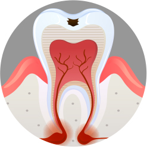
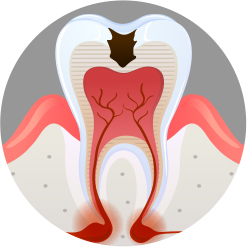
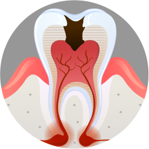
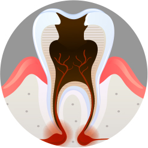

<%=m_client_name_s%> 의식하진정요법
<%=m_client_en%>
소중한 내 치아!! 너무 쉽게 포기하지 마세요!
최대한 살리는 충치 치료
자신의 치아를 최대한 살려 쓸수 있도록
<%=m_client_name%>가 도와드리겠습니다
치아는 신체의 다른 부위와 달리 한번 망가지면 다시 재생이 안되는 비가역적인 구조물로써
최대한 보존적으로 치료를 시행해야 합니다.
치료 자체가 영구적이지 않고 모든 치아 치료는 그 수명과 한계가 명확하게 존재 하기 때문에
치료후에 재치료까지 생각하는 치료로 이어져야 합니다.
충치는 언제 치료해야 할까요?
빠를수록 좋은 충치치료
충치가 발생한 치아의 통증이 지속이지 않고 아팠다 괜찮았다를 반복하는 경우 가볍게 여겨 치료를 미루는 경우가 많습니다..
하지만 충치를 오래 방치할 경우 염증이 발생되거나 신경부위까지 세균에 감염되어 신경치료가 필요하게 될 수 있고,
나아가 치료가 불가능하여 발치 후 임플란트를 해야하는 경우까지 발생 할 수 있습니다..




-
1
- 충치 초기 : 법랑질 우식증
- 치아의 가장 겉표면인 법랑질에만 충치가 진행된 경우로 통증은 없으며
간단한 레진치료 또는 충치의 진행여부를 지켜보며 치료를 하지 않고 정기적으로 검진 하는 경우도 있습니다.
-
2
- 충치 중기 : 상아질 우식증
- 법랑질 아래의 상아질까지 충치가 진행된 경우
이 단계부터 차 고 뜨거운 음식을 먹거나 치아가 씹는 기능을 할 때 통증이 느껴질 수도 있습니다.
치아를 부분적으로 본을 떠서 조각을 붙이는 인레이(혹은 온레이)치료나 부위가 넓을 경우
크라운 치료까지도 필요할 수 있습니다.
-
3
- 충치 말기 : 치수염
- 치아 내부의 신경까지 충치균이 감염되어 치아의 극심한 통증을 유발하고 심한 경우
치아 뿌리 끝에 염증 주머니를 만들기도 합니다.
치아 내부의 신경을 제거하는 신경치료를 하고 치아를 덮어씌우는 크라운 치료가 필요하며
신경치료가 어려운 경우 발치의 가능성도 있습니다.
충치치료의 종류

-
1
- 인레이 / 온레이
- 충치 발생 범위에 따라 비교적 좁은 범위의 충치에는 인레이, 넓은 범위의 충치에는온레이 치료가 이루어집니다.
-
2
- 세라믹 인레이
- 자연 치아의 색상과 유사하게 제작되는 세라믹 인레이는, 충치 범위가 크고 눈에 띄는 부위의 치료에 적합하며
기존의 아말감이나 골드로 치료받은 무위가 보이는 것을 꺼려하는 분들에게 권해드리는 방법입니다.
-
3
- 골드 인레이
- 충치 부위가 넓거나 씹는 힘이 강한 어금니 부위에 적합한 골드인레이는,
인체에 무해하며 부식이 없고 강도와 경도가 자연치와 유사합니다.